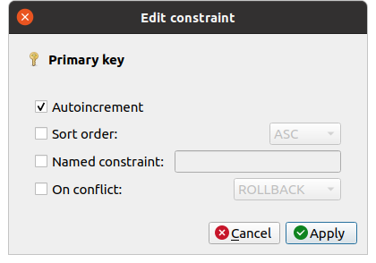
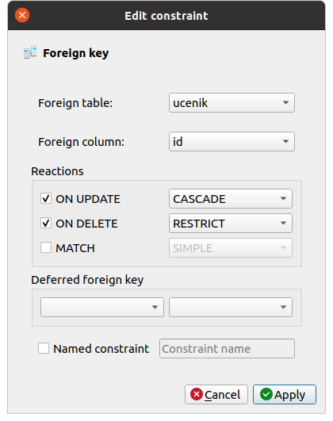
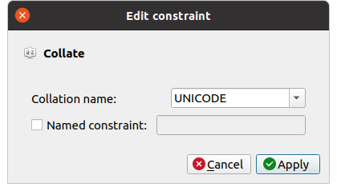

Креирање базе података у SQLite Studio¶
SQLite базу података можемо да креирамо из програма SQLite Studio командом менија
Database → Add a database. Приликом креирања базе потребно је одабрати фајл,
тј. датотеку, у којој ће се та база чувати (ови фајлови обично имају екстензију .``db``)
и назив под којим ће се база приказивати у корисничком интерфејсу. Ми ћемо креирати базу у фајлу dnevnik.db.
(изабрати локацију за чување и унети назив фајла након клика на дугме са знаком плус) и приказиваће се под
називом dnevnik.
{kind=link}
Уместо да креирамо нову базу, командом менија Database → Add a database можемо и отворити неку постојећу
(довољно је одабрати постојећи фајл на диску и уписати назив под којим ће се та база видети у нашем систему).
Креирање табела¶
Након креирања базе креираћемо табеле у њој. То се може урадити
командом менија Structure → Create a table или командом Create a table контекстног менија (који се појави након десног клика на назив
базе на паноу Databases).
{kind=link}
Након тога се у централном делу прозора појављује пано са неколико
картица који је посвећен уређивању табеле. Подразумевано се приказује
прва картица (Structure) која је намењена дефинисању структуре
табеле.
{kind=link}
Прво је потребно дефинисати назив табеле (за почетак креирамо табелу
ucenik), попуњавањем поља Table name.
Командом Add column (која се може покренути кликом на дугме
или притиском на тастер Ins) додаје се нова
колона у табелу. Приликом додавања сваке нове колоне у табелу потребно
је обавезно одредити јој назив (Column name) и тип података у тој
колони (Data type).
{kind=link}
Постоји велики број различитих типова података, међутим, описаћемо само неколико најчешће коришћених:
INTEGER– цели бројевиDOUBLE– реални бројеви (записани у покретном зарезу)VARCHAR– текстулани подаци (ниске карактера) за које је позната максимална дужинаDATE,TIME,DATETIME– датум, време у току дана тј. датум и време.
Код неких типова података (на пример, код типа VARCHAR) потребно
је навести и величину типа и уписати је у поље SIZE.
Након три основна параметра (Column name, Data type и
Size) могуће је конфигурисати додатне опције колона. Опишимо
неколико опција које ћемо користити у наставку.
Primary key— овом опцијом колону која се додаје можемо да прогласимо за примарни кључ табеле (ако више колона чини примарни кључ, онда се то подешава тек након додавања свих тих колона). Додатне опције су доступне након притиска на дугмеConfigure. Једна, прилично често коришћена јеAutoincrementкоја се користи код целобројних примарних кључева и која омогућава да се приликом уноса врсте у табелу не наведе вредност примарног кључа, него да се та вредност аутоматски додели као прва наредна слободна вредност. На тај начин се имплементирају генерисани идентификатори које смо помињали у претходним лекцијама.
Foreign key— овом опцијом колону која се додаје можемо да прогласимо за страни кључ (ако више колона чини исти страни кључ, онда се то подешава тек након додавања свих тих колона). Подсетимо се, колона је страни кључ ако је свака вредност у тој колони примарни кључ у некој другој табели. Зато се приликом подешавања да је колона страни кључ бира табела и колона која је њен примарни кључ (подразумева се да је та табела већ креирана). Детаљније објашњење подешавања страног кључа биће дато кроз пример креирања табеле изостанака, мало касније у тексту.Not null— одабиром ове опције се забрањује да колона садржи специјалне недостајуће вредности (NULL), које се користе да се нагласи да је неки податак непознат (кључеви аутоматски не могу да садрже недостајуће вредности, па ову опцију углавном користимо за колоне које нису кључеви).
Collate— овом опцијом се подешава поредак текстуалних података (тзв. колациона секвенца) што директно одређује и редослед сортирања елемената колоне. Ако се у колони смештају и карактери који нису део енглеске абецеде (тј. који не припадају таблици ASCII), тада је пожељно подеситиCollation nameда будеUNICODE(то ћемо увек радити када у колони желимо да памтимо текст на српском језику, било да је записан латиницом, било ћирилицом).Default— одабиром ове опције можемо задати подразумевану вредност, која ће бити уписана ако се приликом додавања нове врсте вредност ове колоне не наведе.
{kind=link}
{kind=link}
{kind=link}
Користећи описани поступак, можемо да креирамо табелу ucenik у
нашем минијатурном електронском дневнику.
Додајемо колону
idза коју бирамо типINTEGER, штриклирамо опцијуPRIMARY KEYи конфигуришемо је тако да будеAUTOINCREMENT.Додајемо колону
imeза коју бирамо типVARCHARи величину 30 (чиме ограничавамо дужину имена на 30 карактера), штриклирамо опцијуNOT NULL(јер име ученика не сме да буде непознато) и опцијуCollate, конфигуришући је тако даCollation nameбудеUNICODE(јер планирамо да користимо ћирилички запис, као и да поредимо и сортирамо ученике на основу имена и презимена у азбучном редоследу).Додајемо колону
prezimeза коју бирамо типVARCHARи величину 30 (чиме ограничавамо дужину презимена на 30 карактера), штриклирамо опцијуNOT NULL(јер презиме ученика не сме да буде непознато) и подешавамоCollateтако да се користиUNICODE.Додајемо колону
datum_rodjenjaза коју бирамо типDATE.Додајемо колону
razredза коју бирамо типINTEGER.Додајемо колону
odeljenjeза коју бирамо типINTEGER.
Измене које се направе се не уносе у базу одмах, већ тек након команде Commit structure changes,
односно клика на дугме . Препоручујемо вам да ово дугме често користите и тиме често
уписујете измене у базу, да их не бисте случајно изгубили, али и да бисте што пре уочили ако направите неку грешку.
Након додавања свих колона потребно је да упишемо све измене у базу (командом Commit structure changes).
Ако је све прошло како треба, на картици Structure видеће се
следећи списак колона.
{kind=link}
Једном креираној табели, структура може и накнадно да се промени, да се по потреби додају или уклоне колоне, промене типови података, додају или уклоне ограничења.
Креирање табеле помоћу језика SQL¶
У досадашњем тексту смо описали како изгледа поступак дефинисања
табела у бази помоћу графичког корисничког интерфејса. За почетнике је
овај начин дефинисања табеле сигурно најједноставнији и у наставку
ћемо претпоставити да ће све табеле бити креиране на тај
начин. Међутим, табеле је могуће креирати и коришћењем упитног језика
SQL (и то његовог посебног подскупа који се назива SQL Data
Definition Language, DDL). Након креирања табеле помоћу ГКИ, на
картици DDL можемо да видимо како би се табела могла креирати и
помоћу упита у језику SQL. За табелу ученик то би изгледало овако:
CREATE TABLE ucenik (
id INTEGER PRIMARY KEY AUTOINCREMENT,
ime VARCHAR (30) NOT NULL COLLATE UNICODE,
prezime VARCHAR (30) NOT NULL COLLATE UNICODE,
pol CHAR,
datum_rodjenja DATE,
razred INTEGER,
odeljenje INTEGER
);
Приметимо да је овај упит облика CREATE TABLE naziv (kolone);, при чему
се за сваку колону наводи назив, тип података и затим додатни услови и
ограничења.
Рад са подацима у табели¶
Када је структура табеле дефинисана, могу се у њу уписати и неки
подаци. То се врши на картици DATA.
{kind=link}
Додавање врста се врши командом Insert row (доступном путем
дугмета или путем тастера insert на
тастатури). Када се врста дода, може се попунити подацима (при чему,
оне колоне које имају подешену опцију AUTOINCREMENT или
подразумевану вредност могу да остану и празне).
Постојеће врсте могу да се ажурирају тако што се просто измени њихов садржај.
Одабрана (селектована) врста може да се избрише командом Delete
selected row (доступном путем дугмета
или путем тастера delete на тастатури).
Након што смо задовољни садржајем табеле, потребно је да промене
упишемо у базу, што се врши помоћу команде Commit (која је
доступна путем дугмета или путем комбинације тастера
Ctrl и Enter).
Командом Rollback (која је доступна путем дугмета
, или путем комбинације тастера Ctrl и
Backspace) врши се поништавање свих направљених измена и враћање
табеле у полазно стање.
Пошто је могуће да се стање табеле промени и ван програма SQLite
studio, командом Refresh table data (која је доступна путем
дугмета или путем тастера F5) можемо извршити
поновно учитавање свих података у табели из фајла на диску у којем
се чува база података.
Подешавање додатних ограничења¶
Покажимо сада на примеру креирања табеле izostanak како можемо да
подесимо додатна, сложенија ограничења табеле. Наиме, у табели ученика
подесили смо само примарни кључ и забранили недостајуће вредности у
колонама које садрже име и презиме ученика. У табели изостанака јавља
се страни кључ, а наметнућемо и додатни услов да ученик на једном
школском часу може направити највише један изостанак.
Креирамо табелу
izostanakДодајемо колону
idтипаINTEGER, штриклирамо опцијуPRIMARY KEYи конфигуришемо је тако да будеAUTOINCREMENT.Додајемо колону
id_ucenikтипаINTEGERи подешавамо је тако да буде страни кључ у односу на колонуidтабелеucenik.
{kind=link}
Додајемо колону
datumтипаDATE.Додајемо колону
casтипаINTEGER.Додајемо колону
statusтипаVARCHAR, величине 15.
Као што смо већ у ранијим лекцијама детаљно анализарали, да бисмо избегли појаве неконзистентних података
(нпр. два датума рођења за исту особу) и да бисмо избегли редунданце (вишеструког појављивања истих података)
у бази, подаци се чувају распоређени у више табела, а табеле су међусобно повезане системом страних кључева
који показују на примарне кључеве других табела. Објаснићемо сада још мало детаљније ограничење које смо додали у табелу izostanak.
Дефинисањем страног кључа у овој табели смо осигурали да није могуће да у табели изостанака постоји изостанак
који је придружен ученику који не постоји у табели ученика. Дакле, све вредности које се налазе у колони
id_ucenik постоје у колони id у табели ucenik.
{kind=link}
Приликом конфигурисања страног кључа смо изабрали да систем забрани да обришемо ученика док у табели изостанака
постоје његови изостанци (опцијом ON DELETE RESTRICT), а да када ажурирамо (изменимо) примарни кључ ученика,
и у табели изостанака подаци за тог ученика буду аутоматски ажурирани (опцијом ON UPDATE CASCADE).
Каскадно ажурирање је ислустровано на следећој слици. Под усвловом да ученици Милици Јовановић можемо да променимо
идентификациони број на 22 (уколико нема већ ученика са том идентификацијом), каскадно ће се извршити и измена у
табели са изостанцима и код свих изостанака који се односе на ову ученицу ће се појавити њен нови идентификациони број.
Тако је очуван интегритет страног кључа.
{kind=link}
Можемо да приметимо да каскадна опција можда није најбоље решење за брисање зато што би брисање једног реда у једној табели потенцијално обрисало податке из више редова више различитих табела, па тиме можда и значајан део целе базе. Узмимо на пример да желимо да обришемо једног ученика. Уколико је укључена каскадна опција, то би значило да би брисање тог једног реда узроковало брисање свих изостанака тог ученика, а затим брисање свих оцена тог ученика, и тако редом. Боље решење би било да се такво брисање не дозволи, у овом случају да се не дозволи брисање података о ученику школе. Када брисање не успе, било би добро урадити неко архивирање свих повезаних података о ученику којег желимо да обришемо (изостанци, оцене…). Затим урадити брисање обрнутим редоследом који је увек дозвољен.
Опишимо све могуће типове акција које систем може да изврши када примети да се нарушава интегритет страног кључа (када се на неки начин мења или брише ученик чији изостанци постоје у табели изостанака).
Опција
RESTRICTзабрањује извођење акције над табелом која би нарушила интегритет страног кључа.Опција
CАSCADEподразумева да ће се све промене пропагирати (у облику каскаде, тј. степеница), све док се не задовољи интегритет страног кључа. Каскадно брисање би подразумевало да се у случају брисања ученика аутоматски обришу и сви подаци о његовим изостанцима.Опција
SET NULLналаже систему да у табели изостанака на место идентификатора ученика упише специјалну недостајућу вредностNULL.Опција
SET DEFAULTналаже да у табели изостанака на место идентификатора ученика упише подразумевану вредност (под претпоставком да је она подешена).Опција
NO ACTIONналаже систему да све остави како јесте, тј. да не врши никакву акцију у случају да је интегритет страног кључа нарушен (ово би требало избегавати, осим ако за то не постоји неки посебан разлог).
Осим страног кључа, анализираћемо још једно ограничење које се природно намеће, а то је да ученик не може да током
једног часа оствари више од једног изостанка. Можемо, дакле, гарантовати да не могу да постоје две врсте у табели
изостанака у којима би тројка колона (id_ucenik, datum, cas) била једнака. Та тројка једнозначно идентификује изостанак
и могла би да буде његов примарни кључ, међутим, пошто смо увели посебну колону id у којој чувамо јединствени
идентификатор изостанка, коју смо прогласили за примарни кључ, поставићемо посебан услов јединствености вредности у ове
три колоне (сваки примарни кључ аутоматски има постављен услов јединствености). То можемо урадити тако што у доњем делу
картице STRUCTURE пронађемо команду Add table unique constraint (која је доступна помоћу дугмета ) и
затим штриклирамо колоне id_ucenik, datum и cas.
{kind=link}
Након креирања табеле izostanak на картици DDL можемо да видимо
да је њена дефиниција у језику SQL једнака следећој.
CREATE TABLE izostanak (
id INTEGER PRIMARY KEY AUTOINCREMENT,
id_ucenik REFERENCES ucenik (id) ON DELETE RESTRICT
ON UPDATE CАSCADE,
datum DATE,
cas INT,
status VARCHAR (15),
UNIQUE (id_ucenik, datum, cas)
);